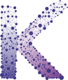

Advances in Collective Robotics Through Macro-Programming
Challenge
Collective Adaptive Systems are ensembles of sensors, robots, and services that cooperate while devices move, fail, and join at runtime.
Aggregate Computing offers reusable patterns for collective behavior, but most systems still run as isolated aggregate programs.
There is no runtime layer for managing multiple collective processes as first-class entities.
- lifecycle and ownership for overlapping processes;
- roles, permissions, signals, and resource flows;
- monitoring, adaptation, and safety as runtime services;
- managed recovery from failures, mobility, and topology changes.


A Collective Operating System is the missing middleware for running many aggregate processes on shared, heterogeneous devices, with lifecycle, communication, permissions, and resources managed collectively.
Building Blocks
Each contribution implements one capability that a Collective OS must expose as a reusable runtime service.
Kotlin Multiplatform support for writing and deploying reusable aggregate programs across platforms.

Fresh consensus values without global resets: stale contributions are pruned after failures and topology changes.

Adaptive resource flows and dynamic hierarchies: a first model of collective resource management.

Distributed monitoring service: observers fuse partial, noisy information into runtime estimates.

Runtime adaptation service: robot teams repair task assignments after failures, new tasks, or changing conditions.

Distributed safety filter: local and pairwise CLF/CBF constraints refine nominal aggregate commands before actuation.

Research Direction
The next step is to turn field-based mechanisms into an execution environment for collective processes running over shared devices.
- Collective processes: define scope, lifecycle, ownership, and membership across space and time.
- Reusable services: integrate coordination, monitoring, replanning, resource flows, and safety filters.
- Control and access: manage permissions, signals, communication, and conflicts among overlapping processes.
- Experimental grounding: validate on robot teams, smart spaces, and disturbed environments.
Aggregate code running on many devices
Multiple collective activities with scope and lifecycle
A COS coordinating services, resources, and constraints
The key research problem is to lift OS concepts to collective processes distributed over space and time.
Takeaway
The thesis goal is a Collective Operating System: a runtime that turns field-based algorithms and safety filters into deployable, observable, governable collective applications.